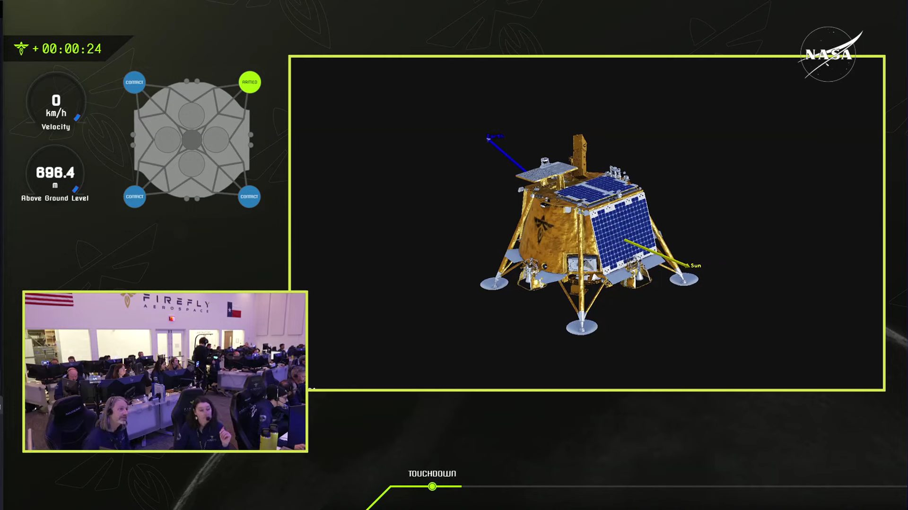
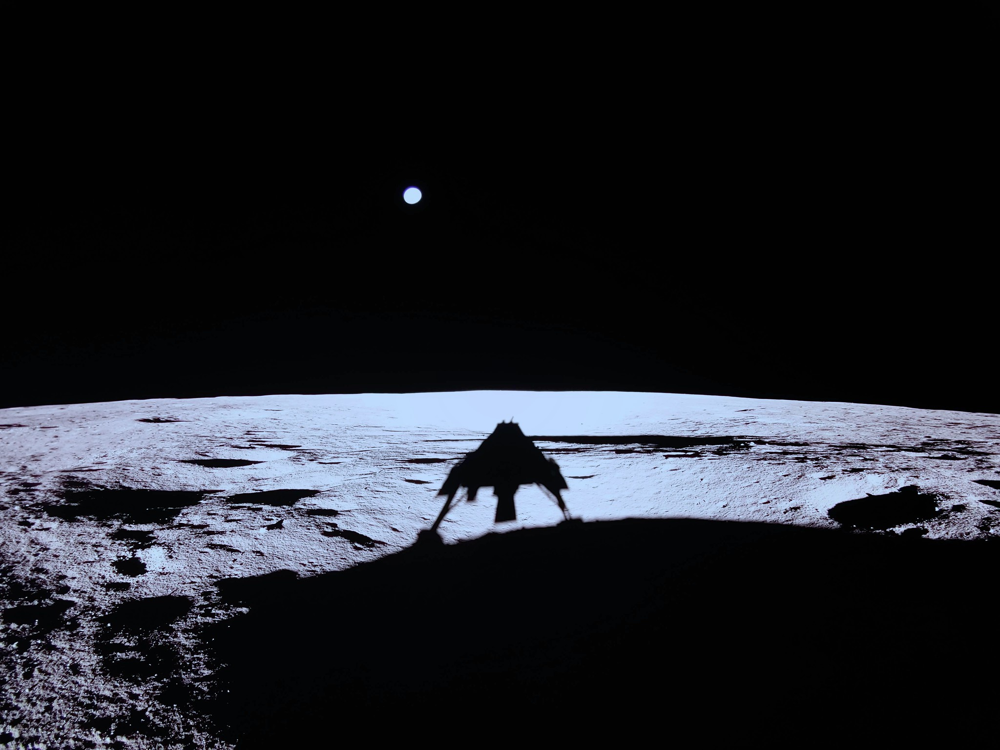

一言以蔽之，Firefly，幹得好！
 Credit: Firefly Aerospace
說實話，我對 CLPS 的期待程度其實比 Artemis 的主線（SLS + Orion + HLS 的載人登月）還要高。相比理想遠大但是各種細節仍相當不明確的主線，CLPS 至少商業模式明確：NASA 買船票，送一票實驗上月球。
而因為放酬載上去的門檻低到大學實驗室的規模都可以參與，因此很難想像未來幾年各種月球科學、技術驗證的酬載會餵不飽這幾家公司。當這套模式穩定下來之後，可以想見還會有更多單位參與其中。所以這個市場雖然不會在短時間內有指數爆發，但至少可以穩定的成長。
而且如果一切順利，商業公司們也許在二到三年內就可以推出他們的下一代登月艇，比起現役約 30 - 260 kg 等級的酬載，各家的二代登陸艇普遍都要大上一圈，比如 NOVA-D 就瞄準 2000 kg 的量級。到這邊能玩的花樣就更多了，比如各種 ISRU、或是像我個人很期待的月背無線電望遠鏡（LCRT、FarView）的技術驗證，都有可能實現。
當然載人任務有其不可取代的意義，你也可以 argue 說 Starship HLS 的單位投送成本和單次投送量都是一面倒的輾壓。但以現在 Starship 的進度（不久前才聽說在軌加注推進劑應該要推遲到 2026 了），HLS 到底哪一年才能送太空人到月表還未可知。即使 HLS 服役了，個人覺得小登月艇的精準定點投送（即使現在這個能力它們還沒有）仍有相當價值，類似 Falcon 9 與 Electron 的市場定位差異。
所以只要 CLPS 不要哪天莫名其妙被砍了，個人對它的前景還是很看好的。也祝明天 IM-2 登陸順利。